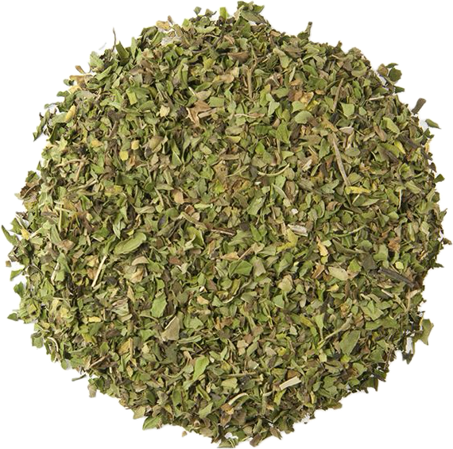

Mentha piperita
Overview
Peppermint is a hybrid mint plant, a cross between watermint and spearmint, native to Europe and the Middle East. It has dark green leaves and produces small purple or white flowers and is prized for its refreshing, minty flavor and aroma. Peppermint is commonly used fresh or dried as a culinary herb, tea, and flavoring.
Cultural Overlap
Peppermint is used in cuisines around the world, particularly in European, Middle Eastern, and American cuisines. It is used to flavor sweets, desserts, beverages, sauces, and savory dishes such as lamb and salads. Peppermint also has cultural significance in traditional medicine and aromatherapy, where it is believed to have various health benefits, including digestive support, headache relief, and stress reduction.